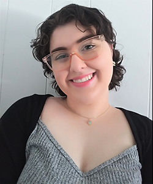
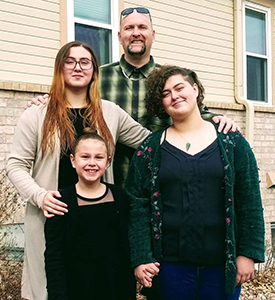

About Me
Hi, my name is Savannah Anderson, and I have lived in Pueblo and Pueblo West for all of my 21 years of life. I graduated from Pueblo West High School in May 2021 and am now a student at Pueblo Community College. I have been in school since the fall of 2021, and I'm studying for my major: graphic design. I have learned so much, such as how to work with Microsoft Office, understand Adobe applications, and get more in-depth on the multiple structures of graphic design. My favorite class so far has been Typography and Layout. After I graduate, I intend to apply for a publication or illustration design position.
This website is a result of the current class I am taking: Web Design II. The purpose of this site is to offer my services as a graphic designer specializing in illustrations. It will also display my previous work from classes to show my skills and style to potential clients. The site's primary audience will likely be new, smaller businesses and businesses that want an updated brand design. I plan to have a home, about, portfolio, blog, products, and contact page. While web design is one of the sections of graphic design I struggle with the most, I will do my absolute best to learn and improve.